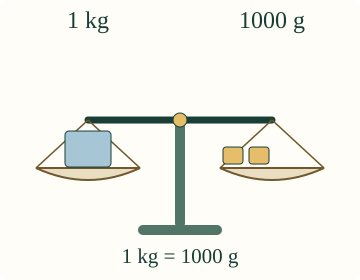
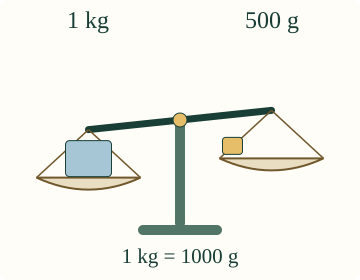

Gramma ja kilogramma
Aava tarvitsee kilon paketin. Voiko kaksi punnusta painaa saman kuin yksi?
Tunnen gramman ja kilogramman. Kokoan saman massan eri punnuksilla.
Sama massa kahdella tavalla
Kun punnitset, mittaat massaa. Gramma merkitään g ja kilogramma merkitään kg. Yksi kilogramma on tuhat grammaa: 1 kg = 1000 g.
Punnuksen merkintä kertoo sen massan. Voit aikuisen kanssa verrata oikeita, valmiiksi punnittuja esineitä.

Kaksi 500 g punnusta on yhtä paljon kuin 1 kg. Vaaka on tasan.
Yksi kummallakin ei riitä

Nyt kummallakin puolella on yksi punnus. Silti 1 kg on painavampi kuin 500 g. Esineiden määrä ei kerro massaa.
Ennusta: mitä tapahtuu, jos lisäät oikealle toisen 500 g punnuksen?
Kokoa kilo
Vasen 1 kg pysyy mukana. Kokoa oikealle sama massa.
Toinen tapa
Myös kymmenen 100 g punnusta painaa kilon. Voit siis koota saman massan eri tavoin. Punnusten ei tarvitse olla samoja.
Apua
Vasen punnus pysyy samana. Oikean puolen luku kertoo punnusten yhteismassan grammoina. Lisää tai poista punnuksia. Kilon ollessa valmis voit vaihtaa sen kahteen 500 g punnukseen tai yhteen 1 kg punnukseen. Vaihto säilyttää massan.
Tutki lisää ilman ruutua
Kootkaa aikuisen kanssa sama massa erilaisista valmiiksi punnituista esineistä. Pitäkää vertailun 1 kg ennallaan. Suuri rasia voi olla kevyempi kuin pieni. Katso punnitusta, älä vain kokoa. Myös 1500 g on enemmän kuin 1 kg: grammoina ilmoitettu määrä ei aina ole pienempi kuin kilogrammoina ilmoitettu määrä.
Opettajalle: tavoite, tuki ja rajat
Vuosiluokat 1–2; concept/atomic. Tavoite: kilogramma ja gramma massan yksikköinä. Vaadittu JA-ryhmä M-MEAS-05 ja M-MEAS-01. Ei uusia lukutaito-, tuhanteen laskemis- tai muunnosportteja. Aikuinen saa lukea. Nimien tai puheen vahvistamista ei tarvita.
Oikeat tarkistetut vertailumassat antavat aistimuksen gramman ja kilogramman koosta. Tuntemattoman marjan tai pakkauksen massaa ei päätellä kuvasta. Lukumerkinnät annetaan tukena; muodollista yhteenlaskua ei vaadita. Mallin samanpituisilla vaakavarsilla painavampi puoli on alempana. Kallistuksen suuruus on havainnollistava, ei voiman, momentin tai asteikon mitta.
Tarkistus hyväksyy kaikki käytettävistä punnuksista muodostuvat 1000 g jaot ja kaikki niiden järjestykset. Tyhjennys, lisääminen ja poistaminen muuttavat yhteismassaa ja vanha tarkistuspalaute poistuu. Valmis 1000 g voidaan vaihtaa yhtä painaviin punnuksiin; tällainen vaihto ja yksikkömuistutus säilyttävät palautteen.
Näyttö kertoo tuetun mallin massan. Se ei osoita vaa'an nollaamista, oikeiden punnusten käsittelyä, itsenäistä fyysistä punnitsemista tai pysyvää osaamista. Ei henkilöhistoriaa, pisteitä tai oppimisvaikutuksen väitettä. Henkilöiden painoja tai nostovoimaa ei käytetä vertailussa.
Lopuksi
Miksi sama esineiden määrä ei takaa samaa massaa?